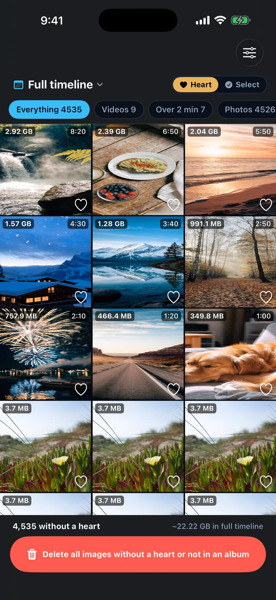
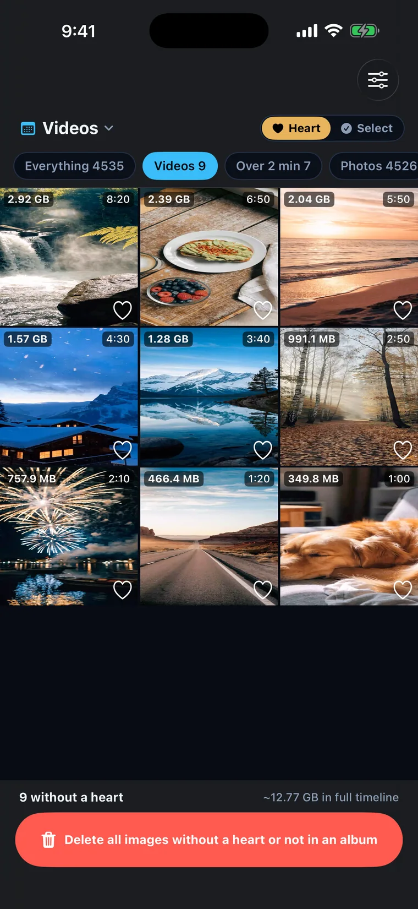
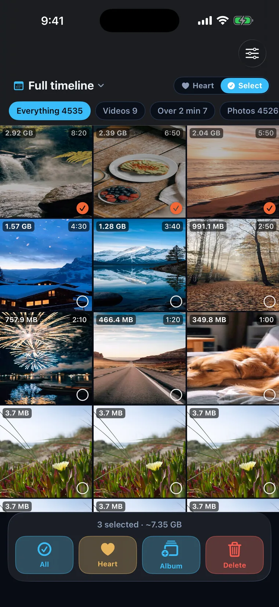
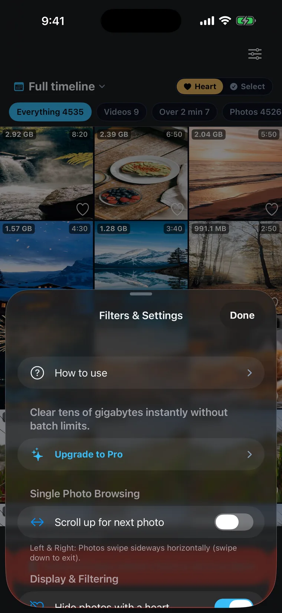
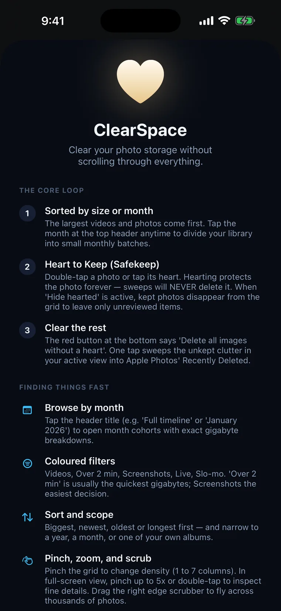

ClearSpace
A photo cleaner for iPhone that opens your library in the order that actually matters: biggest first. The 2.9 GB video you filmed once and never watched leads the grid — the 40 KB screenshot does not. Heart what you keep, and one button clears the rest. Native Swift and SwiftUI on Apple's PhotoKit, running entirely on your device.
Why it opens biggest-first
Most photo cleaners hand your library back in the order you shot it. That means you spend your patience on years of small, forgettable photos long before you reach the handful of videos actually worth gigabytes — and most people quit somewhere in 2019 with nothing freed.
ClearSpace inverts it. The largest items lead, each tagged with roughly what it costs, so the first ten decisions are the ten that matter. The bar at the bottom always shows what you have not kept and what it is worth, so you can stop the moment you have found enough.
Biggest first
The largest videos and photos lead the grid, each labelled with roughly what it costs. Or tap the month header to split the library into finishable monthly cohorts instead.
Heart what you keep
Double-tap a photo, or tap its heart. Hearted photos leave the grid, so the pile you are working through only ever shrinks. That heart is the same Favourite you already have in Apple Photos — there is only one, and it syncs both ways.
Clear the rest
One button sweeps everything in the current view that has no heart and is not filed in an album. It goes to Apple's Recently Deleted, where you have 30 days to change your mind.

The grid, sorted by cost
Every tile carries its estimated size and, for video, its length. The bottom bar keeps a running total of what is still unkept — here, 22 GB across 4,535 items.

Filters that map to decisions
Videos, Over 2 min, Screenshots, Live, Slo-mo, Favourites. Nine clips here account for 12.77 GB — Over 2 min is usually the fastest gigabytes going, Screenshots the easiest decision.

Select mode for a known run
When you already know what has to go — a burst of near-identical shots, a run of screenshots — drag across tiles and apply Heart, Add to Album or Delete to the whole selection at once.
Full screen, no spinner
Tap to inspect. Videos and Live Photos start playing on their own, with sound. Pinch to 5x, double-tap for 2.5x. Heart keeps and advances, bookmark files to your last-used album, trash moves on.

Settings that stay out of the way
Hide hearted, hide albumed, browse direction, grid density. Enough to shape the review, not enough to become another thing to configure.

The whole app, explained on one screen
Three steps and four shortcuts, shown once at first launch and available any time from Settings. There is no tour, no drip of tips, and nothing that has to be dismissed twice.
Sizes without opening a single file
Every figure is shown with a ~ because it is derived from the asset's own metadata — dimensions, duration, and the codec it was recorded in — rather than by reading the file. Codec is the part naive estimators miss: HEVC is roughly half the bitrate of H.264 at equal quality, and HEIC roughly half of JPEG, so a flat pixel coefficient over-counts stills and badly under-counts video. Getting that right is what makes sorting a 40,000-item library instant instead of a multi-minute wait.
One heart, not two
Hearting in ClearSpace sets the same Favourite flag Apple Photos uses. Anything you had already favourited arrives here hearted, and anything you heart here shows up favourited in Photos. No parallel list to maintain, and nothing to lose if you delete the app.
A grid built to be flung
Thumbnails come from PHCachingImageManager with a moving, asymmetric prefetch window — 26 rows ahead, 8 behind — that releases its trailing edge on the same tick it extends. Requests use .fastFormat, which returns once instead of twice per cell. The grid also never reaches the network: an iCloud-only asset draws a placeholder, and opening it deliberately is what earns the download.
Finishable, on purpose
An infinite library is why people give up. Tap the month header and the library splits into monthly cohorts with exact gigabyte breakdowns, so a review has an end you can actually reach. Success is closing the app, not staying in it.
Deleting is not the only exit
Plenty of photos are worth keeping but not worth leaving loose. The bookmark control files a photo into your last-used Apple Photos album in one tap, or opens the album picker; photos already filed carry an album badge, and Hide Albumed narrows the grid to what has genuinely not been dealt with.
Nothing leaves the phone
No account, no server, no analytics SDK of any kind — first- or third-party — and no ad framework. Everything happens through Apple's PhotoKit on your device, which is also what the app's privacy manifest declares to Apple on every build.
Platform
Native Swift 5.9 and SwiftUI, iOS 17 and later. Photo access entirely through Apple's PhotoKit.
Shared engine
The photo-auditing core lives in Packages/UnliDiskPhotos, a Swift package shared with the Mac app — one indexer, one size estimator, one album model.
Reversible safety
Deletions route through iOS's own Recently Deleted, where items stay for up to 30 days. Nothing is hard-deleted, deliberately.
Local privacy
100% on-device. No account, no analytics, no trackers, nothing uploaded. Declared in the shipped privacy manifest.
Pricing
Free to find, sort, filter, heart, file and delete one at a time. Bulk clearing is a one-time $9.99 purchase — no subscription, ever.
Current version
1.2 — pinch-to-zoom inspection, finishable monthly cohorts, and the cross-platform Pro unlock.
Buy the Mac app, get ClearSpace Pro free
Unli Disk is the Mac companion: a disk-space analyzer and photo library cleaner whose Photos tab runs on the exact same engine, packaged as Packages/UnliDiskPhotos.
Buying Unli Disk ($14.99 one-time) unlocks ClearSpace Pro on your iPhone automatically. It travels over iCloud key-value storage tied to your Apple Account — no sign-in, no server of ours in the middle, and a purchase record is the only thing that moves.
- It does not find duplicates on iPhone. Duplicate and blur detection ships in the Mac app, not in ClearSpace. It is on the roadmap for iOS; until it is here, nothing in the app claims otherwise.
- It cannot free your storage on its own. Deleted photos sit in Recently Deleted for 30 days, and your storage does not drop until that folder is emptied — Photos → Albums → Recently Deleted → Select → Delete All. This is the single most common support question, and it is working as designed.
- The sizes are estimates, not measurements. Exact per-asset byte counts would need an undocumented PhotoKit value and a database round-trip per photo. Every figure is prefixed with ~ so the trade-off is visible rather than hidden.
- There is no free trial of bulk clearing. The free tier is a complete, unlimited app for one-at-a-time work. Bulk clearing is the paid line, and it is a single payment rather than a subscription.